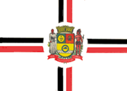

Minha cidade favorita é Itaquaquecetuba, porque foi onde cresci e vivi muitos momentos importantes da minha vida. Apesar de ser uma cidade bem movimentada, ela tem lugares e lembranças que fazem eu me sentir em casa. Gosto do jeito simples das pessoas, das feiras, das praças e da correria do dia a dia que já faz parte da rotina de quem mora aqui. É uma cidade cheia de gente trabalhadora e batalhadora, e isso é algo que admiro muito.
Outra coisa que gosto em Itaquaquecetuba é que ela está sempre crescendo e mudando. Cada bairro tem suas características e histórias, e sempre aparecem novos comércios e lugares para conhecer. Mesmo com os desafios de uma cidade grande, ainda existe um sentimento de comunidade e proximidade entre as pessoas. Para mim, Itaquaquecetuba não é só a cidade onde moro, mas um lugar cheio de memórias, carinho e significado.
